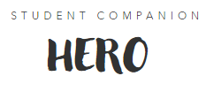

The 3rd place Winner!!
A student's aid to reaching succcess with they're studies

The 3rd place Hackathon Winner!!
I participated in a hackathon where I used my skills in C#
and ASP.NET to create a web application in Windows Forms
that won me third place.
I used Visual Studio as my development environment and leveraged
the power of C# to create the application's functionality. I also
used ASP.NET to build dynamic web pages and web applications that
allowed users to interact with the application's features.
For the database, I used Microsoft SQL Server to store information
and used the Entity Framework to access and manipulate the data.
This allowed me to create a robust and secure database that could
handle large amounts of data.
Winning third place in the hackathon showed me that my skills in C#
and ASP.NET were adequate to create a high-quality web application that
was both functional and useful. I am proud of the work that I did and
look forward to future opportunities to create innovative solutions
using these technologies.